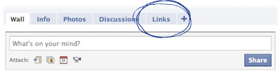

dude, where's the tab?
Hey, where's the links tab / "see all links" button on your facebook profile page?
Checking ... @$#*%!
It has disappeared on the new profile page ...
Can't find that Justin Bieber new haircut link !? :(
Now what? How do you use it?
On any facebook profile page click the bookmark/shortcut to access the links section.
Really sweet!
Works! Here's Justin's new haircut!
No Facebook Links Group